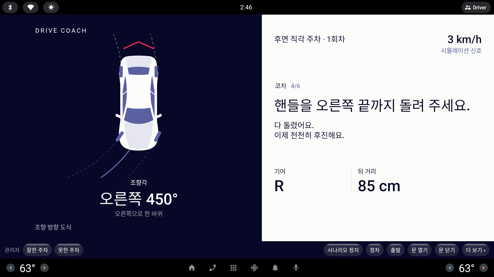
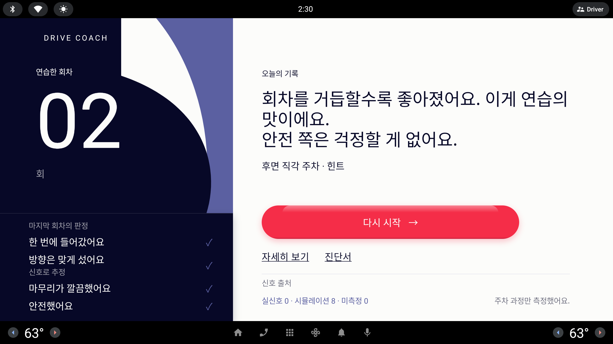

드라이브 코치 — 초보·장롱면허 운전자를 위한 AAOS 운전 연수 어시스턴트 · 팀 사고치조
WHY
왜 필요한가
확인한 공개 통계 · 출처는 아래 ①②③
자동차보험 차량 물적 사고 중 주차 중 ①
30.2%주차 중 사고
53.8%그 주차 사고 중 후진
바깥 고리 = 물적 사고 중 주차 · 안쪽 고리 = 주차 사고 중 후진
초보운전자 첫해 사고가 일어난 시기 ②
41%
가 처음 100일 안에
학원 도로연수 10시간 ③
약 50~60만 원
가족이 가르치면 둘 다 힘들고, 학원은 비용이 든다.
HOW
연습 여정 6단계
과제 18 = 주차 4 · 도로 주행 6 · 점검 2 · 지식 6
01
대화로 과제 고르기
말 카드 · AI 코치
02
브리핑
무엇을 보는지 먼저
03
연습
틀린 순간 규칙이 바로 말함 · 5 km/h 넘으면 화면 잠금
04
회차 판정
점수 대신 판정 네 줄 + 신호로 추정한 궤적
05
리포트·진단서
실신호 배지 · 공유 범위는 운전자가(예시)
06
제휴 시험장 모의시험
구간 감점·합격선 · 시험장 신호는 시뮬레이션
가이드단계마다 안내
힌트필요할 때만
평가조용히 채점
→ 회차가 쌓일수록 도움을 줄인다
WHAT
차량 신호로 과정을 본다
신호마다 실신호 · 시뮬레이션 · 미측정 표시
속도
Vehicle.Speed
급가속·급제동 · 주행 중 잠금 · 정차 판정
사내 실신호
조향
SteeringWheel.Angle
조향 도식 · 되돌림 · 추정 궤적
사내 실신호
기어
Transmission.SelectedGear
후진·전진 보정 · 주차 마무리(P)
사내 실신호
안전벨트
Seat…DriverSide.IsBelted
출발 전 점검 · 벨트 먼저 조언
사내 실신호
시동
LowVoltageSystemState
시동 순서 점검
사내 실신호
도어
Door.Row1.DriverSide.IsOpen
정차 후 문 열림 → 리포트
사내 실신호
지시등
DirectionIndicator.*.IsSignaling
좌회전·차선 변경 채점 · 점검
도로 과제
비상등
Lights.Hazard.IsSignaling
도로 과제 · 점검
도로 과제

연습 — 저속 주차 중에만 조향 도식과 계기 값을 보인다

리포트 — 아래 ‘신호 출처’가 실신호·시뮬레이션·미측정을 센다
18
구현한 연습 과제
실신호 7 · 시뮬 1 · 미측정 0
사내 차량 환경(Real VSS), 코드 수정 없이 실행 — 후면 주차
1.2~1.5 s
사내 Copilot 응답
350
단위 테스트(사외)
한계카메라가 없어 칸 안 최종 위치는 판정하지 않는다(과정을 본다) · 예약·진단서 공유·시험장 위치 신호는 시뮬레이션/예시 · 캡처는 외부 에뮬레이터 화면(신호 시뮬레이션) · 실제 도로 검증 전 · ‘사내 실신호’ 표시는 후면 주차 배지 기준(지시등·비상등은 주차 배지 밖)